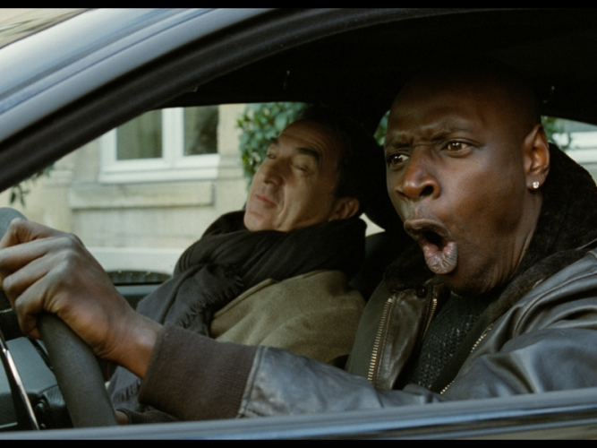
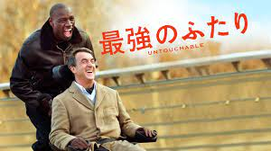

あらすじ

不慮の事故により車椅子の生活を送る大富豪のフィリップ。世話係の面接にやってきた移民の若者ドリスに興味をひかれた彼は、周囲の心配をよそに、看護の経験どころかまともな職にすら就いたことのないドリスを採用する。国籍も立場も年齢も異なる2人だったが、ぶつかり合いながらも心を通わせてゆく実話を元にした物語。
2003年にフランスで放送されたTVドキュメンタリーに感銘を受けた監督のE・トレダノとO・ナカシュが、実在する富豪フィリップ・ポゾ・ディ・ボルゴの体験を映画化。フランスで年間興行収入第1位、日本や北米で史上最もヒットしたフランス映画になるなど、映画史を塗り替えるヒット記録を次々と樹立し、第24回東京国際映画祭で最高賞である東京サクラグランプリを受賞。
不慮の事故により車椅子の生活を送る大富豪のフィリップ。世話係の面接にやってきた移民の若者ドリスに興味をひかれた彼は、周囲の心配をよそに、看護の経験どころかまともな職にすら就いたことのないドリスを採用する。国籍も立場も年齢も異なる2人だったが、ぶつかり合いながらも心を通わせてゆく実話を元にした物語。
フランソワ・クリュゼ:フィリップ役
頸髄損傷で体が不自由な富豪。普段の移動では電動車いすを利用している。ドリスが邸宅内の別室にいる時は、“赤ちゃんモニター”と呼ばれる機器で会話のやり取りをしている。堅物な性格なためこれまでに介護人を何人か雇ってきたが全員1週間ほどで逃げ出している。
オマール・シー：ドリス役
スラム街出身の黒人青年。冒頭で意図せずフィリップの介護人となる。日常の介助の他フィリップの外出時の車の運転手も務めるが実は無免許。基本的には雑な言動をしていて不真面目な性格だが、根は悪くなく陽気でくだらない冗談を時々言っている。
車いすだが富豪で白人であるフィリップと、移民系黒人であるドリス。対照的な二人だが、相手を平等に見て尊重できる二人だからこそ、この友情の物語ができたのだと感じました。 また、裕福な暮らしをしているのは白人、スラム街にいるのは黒人、風俗関係で働いているのはアジア系と、この作品ではフランス国内での差別問題にもスポットがあてられており、作品を通してリアルな実情を知ることができます。